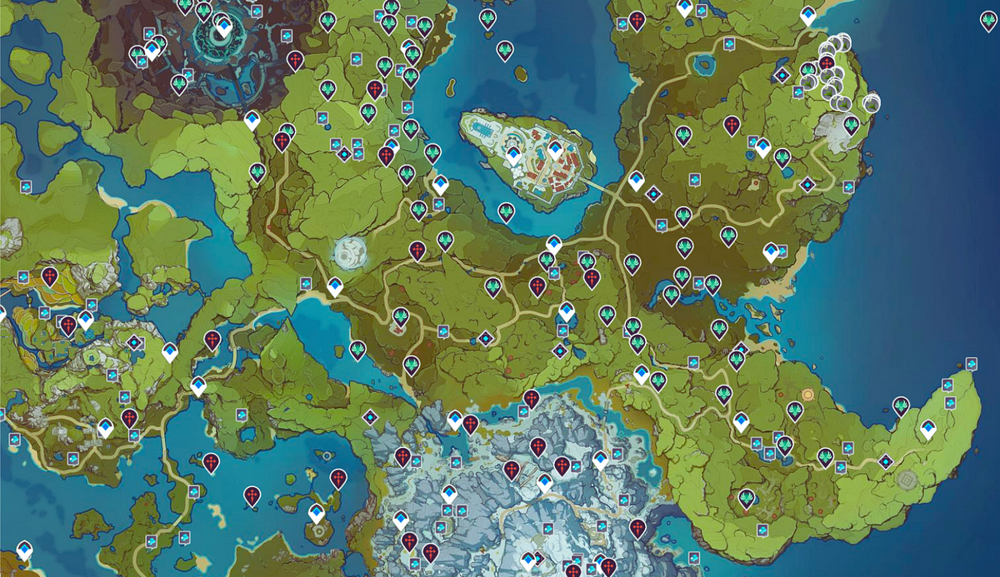

Descubre la historia detrás del juego.
Teyvat es un vasto mundo lleno de magia, elementos y dioses conocidos como Archons. En este mundo, los jugadores toman el papel de un Viajero que busca a su hermano perdido mientras explora las diversas regiones y descubre los secretos detrás de los Archons y las fuerzas que gobiernan este universo.
La historia comienza cuando el Viajero y su hermano son separados por una entidad desconocida. Desde entonces, el Viajero recorre las regiones de Teyvat, cada una gobernada por un Archon que representa un elemento específico. A medida que avanzas en el juego, descubres conspiraciones, conflictos entre las naciones y misterios sobre los dioses.
A continuación, puedes ver un video que explica más detalles sobre la historia de los arcontes de Genshin Impact.